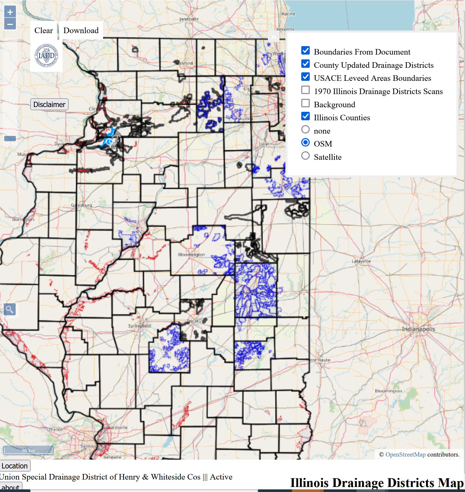

I'm the Resource Conservationist at the Kane-DuPage Soil and Water Conservation District (KDSWCD). I have a certificate in GIS from the College of DuPage and just graduated with a Masters Degree in Cartography and GIS Development at UW-Wisconsin. I'm a certified professional in soil erosion/sediment control (CPESC), a certified conservation planner, a certified storm water inspector. My final project involved developing significant datasets and deploying the data on an interactive web map

The following link will show the data Data Uploaded to a Railway Web Map
The following is a link to the demonstration Mapping Demonstration
Skills: ESRI Products: ArcMap, ArcGIS Pro, ArcPy, ArcCatalog, ArcGIS Javascript API, AppStudio. Google Products: Google Earth Engine, Google Earth/Maps, Google MyMaps, Firebase. Adobe Products: Adobe Acrobat, Adobe Photoshop, Adobe Illustrator | Autodesk: AutoCAD and Inventor Geoprocessing: R, GDAL, OGR, QGIS, GeoPandas, Rasterio, Shapely, HEC-RAS. Frontend Development: HTML/CSS/JavaScript, Android Studio, OpenLayers, Leaflet, Tkinter Backend Development: NodeJS, Geoserver, PostgreSQL(PostGIS), Python, Java, Django Misc.: Windows 10, Web Soil Survey, SW Maps, HEC-RAS, Technical Writing/Presenting
I'm passionate about everything related to remote sensing, agriculture, data visualization and modern cartography. I intend to implement all those interests in my new business, Agrowhere which was launched in Spring of 2021.
I'm always looking for like minded people, so please do not hesitate to reach out!